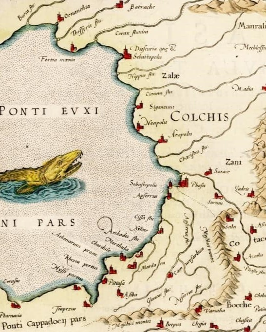
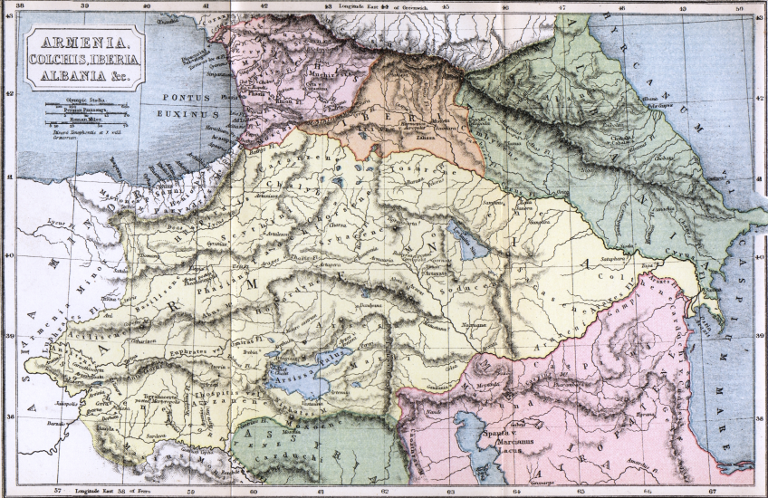

საქართველოს ტერიტორიაზე უძველესი დროიდან ადამიანთა ცხოვრების ფაქტს ადასტურებს დმანისში ჩატარებული არქეოლოგიური გათხრები. დმანისში აღმოჩენილი ადამიანის ჩონჩხის ფრაგმენტები უძველესია მთელს ევრაზიაში, რომლის ასაკი 1 800 000 წელია. ქართველების პირველი პოლიტიკური გაერთიანება დიაოხი და კოლხა მდინარე ჭოროხის აუზში ძვ. წ. II ათასაწლეულის ბოლოს შეიქმნა, მათ მხოლოდ რამდენიმე საუკუნე იარსებეს. ისინი დაამხეს ჩრდილოეთიდან შემოჭრილმა მომთაბარე ტომებმა. ძვ. წ. VI საუკუნეში ჩამოყალიბდა ეგრისის ანუ კოლხეთის სამეფო. იგი თითქმის მთლიანად აერთიანებდა დღევანდელ დასავლეთ საქართველოს. ძვ. წ. IV საუკუნეში აღმოსავლეთ საქართველოში შეიქმნა იბერიის სამეფო. სწორედ იბერიის მეფეს ფარნავაზს უკავშირდება ქართული დამწერლობის შექმნა. ძველი წელთაღრიცხვის ბოლოს რომის იმპერიამ დაიპყრო ეგრისის სამეფო, ქართლის სამეფო ჯერ რომის ვასალია, ხოლო მისი დასუსტების შემდეგ, სპარსეთის გავლენის ქვეშ ექცევა. დასავლეთ საქართველოს ტერიტორიაზე ოთხი სამთავრო ჩამოყალიბდა: ლაზების, აფშილების, აბაზგებისა და სანიგების. განსაკუთრებით გაძლიერდა ლაზთა სამთავრო, რომელმაც თავის გავლენას დაუქვემდებარა დანარჩენი სამი და შეიქმნა ახალი სახელმწიფო - ლაზიკა.
 კოლხეთის სამეფო